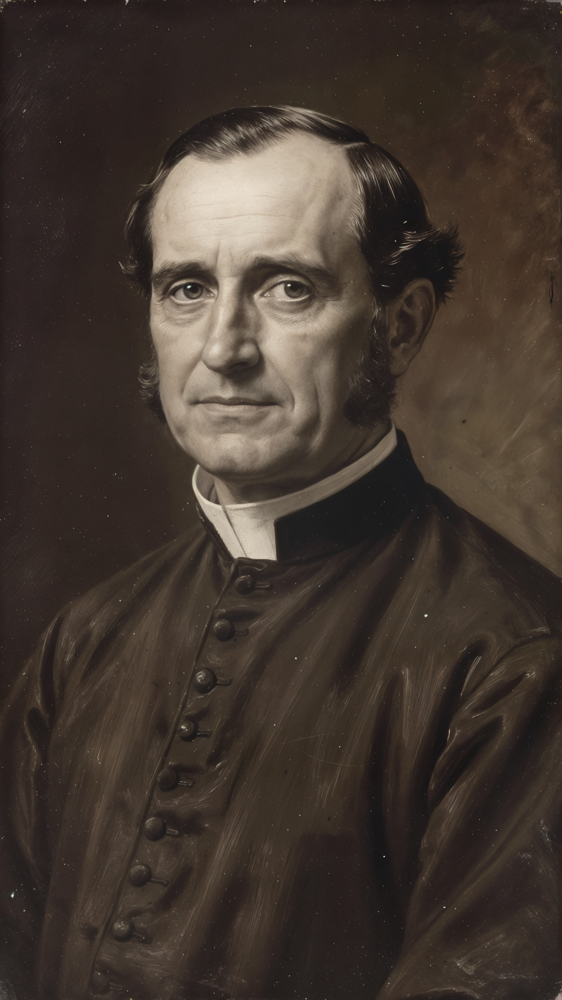
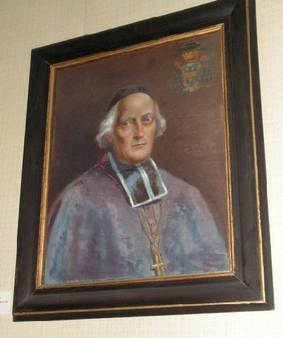
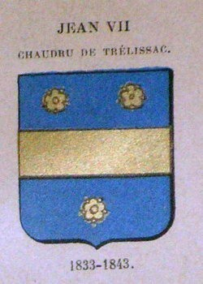
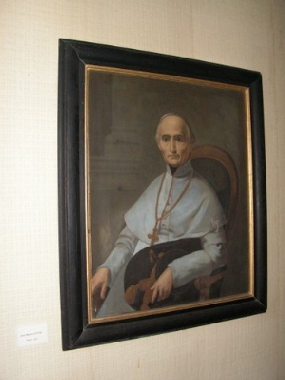
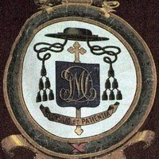

L'Abbé Edouard Bruitte

Portrait reconstitué par IA (source historique : Archives départementales 82)
En 1840, l'abbé Edouard Bruitte (né à Nancy en 1799, ancien aumônier militaire, chevalier de la Légion d'honneur depuis 1838) fut nommé curé de Lachapelle. Venu de Fontenay-aux-Roses où il enseignait la philosophie, il ramena avec lui sa sœur et ses deux nièces.
Dès février 1842, l'évêché de Montauban s'émut de ce que le conseil de fabrique, à l'instigation de son curé, refusait de payer certaines redevances ecclésiastiques. Interdit par Mgr Chaudru de Trélissac, Bruitte répondit par un refus de soumission et publia le 31 janvier 1843, à Lyon, ses "Adieux à Rome" : cinq éditions en deux ans, ainsi qu'une information judiciaire pour injure à la religion.
Portrait
Source : Diocèse de Montauban

Jean-Armand Chaudru de Trélissac
Source : Diocèse de Montauban

Armoiries épiscopales
Source : Diocèse de Montauban
Il abjura, convolа en justes noces, et fut remplacé à Lachapelle par une succession de curés instables : Groussou (1842-1844), Glayel (1844-1847), puis Lagrange (1847-1857) qui apporta enfin la stabilité.
La Communauté Protestante
En 1847, sous l'épiscopat de Mgr Doney, 19 fidèles de Lachapelle adressèrent une petition au consistoire de Montauban. Un oratoire fut ouvert le 28 novembre 1847, desservi d'abord par le pasteur Frossard. Le 11 août 1850, Pierre Momméja acheta une maison pour en faire un temple, consacré le 28 mai 1851.

Portrait officiel
Source : Diocèse de Montauban
Jean-Marie Doney (1794-1871)
Source : Diocèse de Montauban

Armoiries épiscopales
Source : Diocèse de Montauban
En 1856, le pasteur Corbière comptait 29 fidèles : Lachapelle (13), Lavit (5), Castéra-Bouzet (5), Balignac (4), Gramont (2). Mais la situation financière resta fragile : déficits de 841 F (1855) et 653 F (1856), couverts par des subsides des sociétées évangéliques de Nîmes, Genève et Paris.
Le pasteur Corbière nota en 1856 : "Ils n'ont pas saisi par le meilleur côté l'Evangile. Ils ont surtout accepté notre religion par ses points négatifs, par ses oppositions avec le catholicisme." Une conversion par réaction, en somme.
Source : Jean-Claude Fabre, « Une querelle religieuse à Lachapelle au XIXe siècle », Bulletin de la Société archéologique de Tarn-et-Garonne, t. 118, 1993, pp. 3-16.